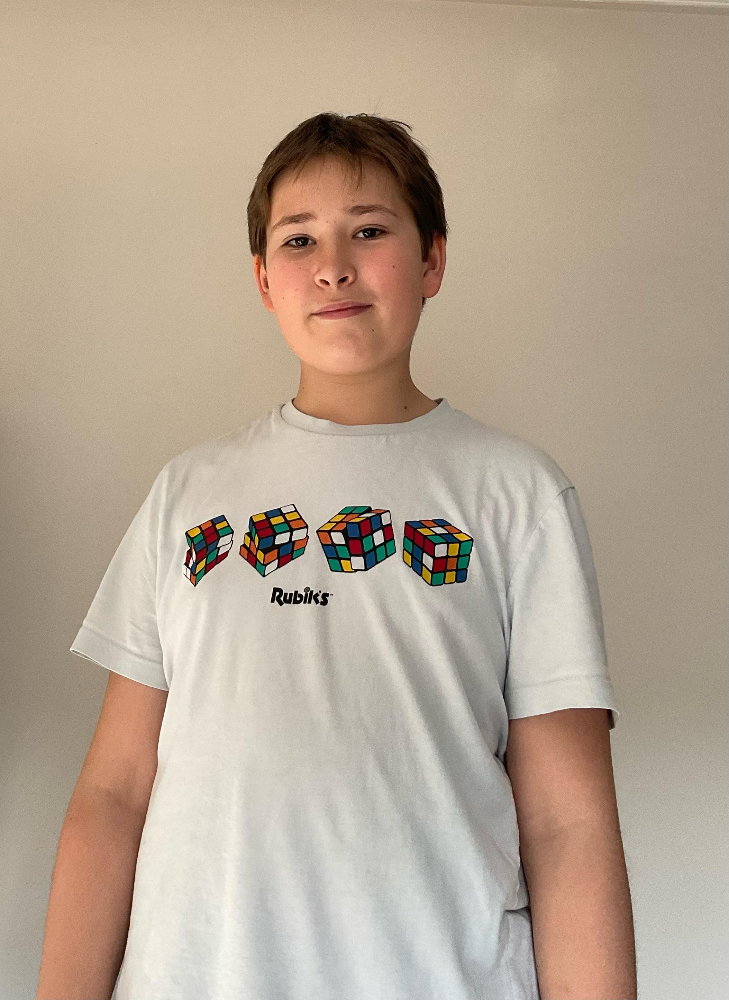
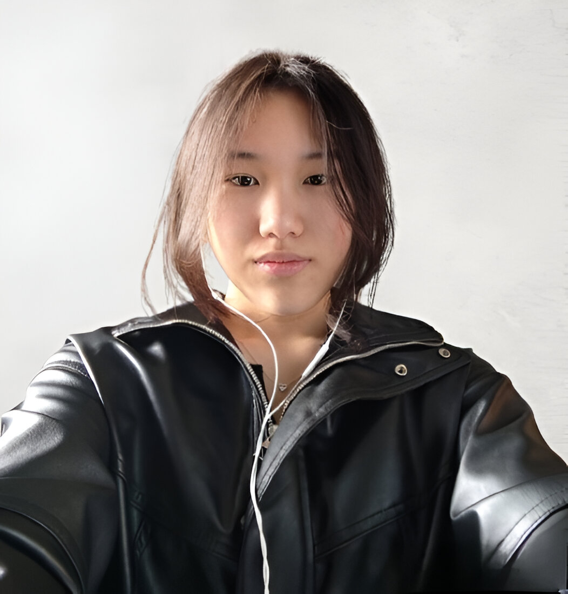

Nuestro Equipo
Conoce a las mentes detrás de AquaLens

Álvaro Fernández
Director de Proyecto, Desarrollador de Software
Ariana Salazar
Directora de Proyecto, Desarrolladora de Software

Xi Ane Chen
Redactora de Contenido
Nuestros Valores
Innovación
Buscamos constantemente nuevas soluciones para mejorar la gestión del agua.
Sostenibilidad
Comprometidos con el medio ambiente y el desarrollo sostenible.
Colaboración
Trabajamos juntos para crear soluciones que beneficien a todos.